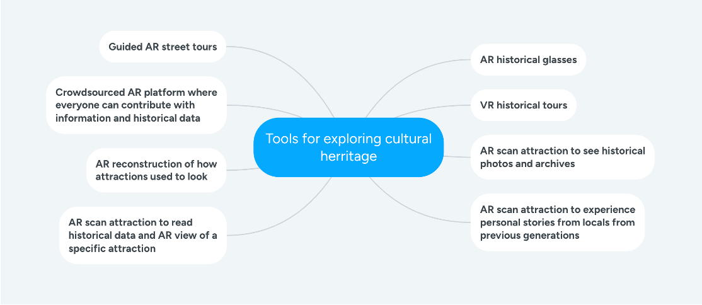

Portfolio
Early in the process we split up the work in order to make sure that everyone got to do a part, that they didn’t work on in the previous project. The empathize part was conducted first to identify user problems and needs. In Figure 1, you can see the different difficulties users encounter and Figure 2 shows how important information is. Based on the different findings in this phase, we decided to have low-resourced historical attractions and sites as our main focus.
Figure 1
Figure 2
I was then in charge of conducting the ideation, which meant that I had to construct the pov’s, brainstorm, storyboard and and do speed dating in order to decide on which solution we would continue with. Afterwards the prototype was developed and later the user testing was conducted.
For the prototype we came up with an idea for being able to scan attractions and immediately be able to read about the attraction. This can be seen in Figure 3 and 4. This is especially practical in areas where they don’t have the resources to have a lot of information signs and provide information in different languages. Furthermore, we implemented a feature for being able to see the attractions in 3D off-location and also read information about it, in case you didn’t get to visit it on your trip.
Figure 3
Figure 4
In general, we got really good user feedback, which validated our idea. A summarized overview of the feedback can be seen in Figure 5.
Figure 5
So I was in charge of ideation, and for that, I first identified how information is already provided for historical attractions and sites. After I compared it with XR in order to determine what exactly are the kay values that XR brings. These findings we had in mind for the rest of our process. I created pov’s for user insight that can be solved by XR and contribute to the low-resourced communities in a good way. These can be seen in Figure 6.
Figure 6
I conducted a brainstorming with some others from the group, and we got all our ideas down on a
paper and later put that into a figure, which can be seen in Figure 7.

Figure 7
I analyzed each idea by determining if they are even realistic and beneficial and ended up with 3 potential good ideas. I conducted a speed dating session with a few participants, where they each had 2 minutes to give their feedback before continuing to the next idea. The speed dating was based on some story-boards I created. Figure 8 shows the storyboard of Guided AR Street Tours. The feedback was given as strengths, weaknesses and suggestions. I put the information into a table and based on that decided which idea to continue the process with. The idea we continued with is “Scan attraction with AR to read historical data and attractions off-site”
Figure 8
I therefore contributed to the whole fundament of our idea before starting the development of the prototype.